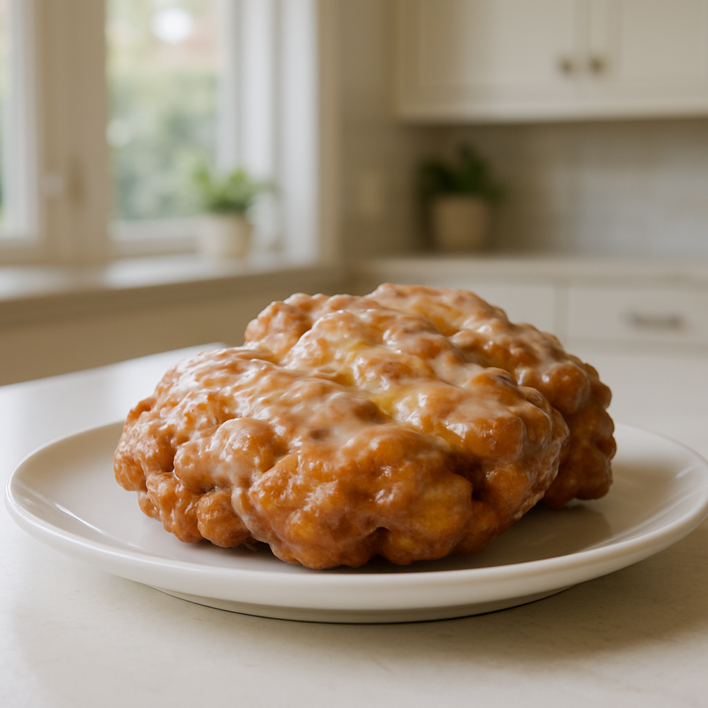
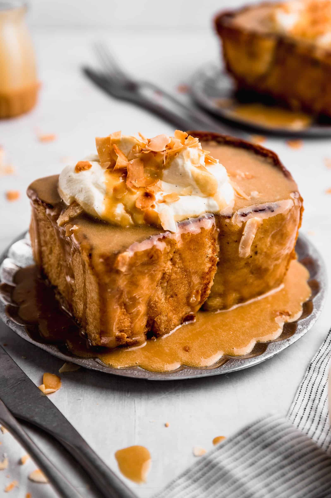
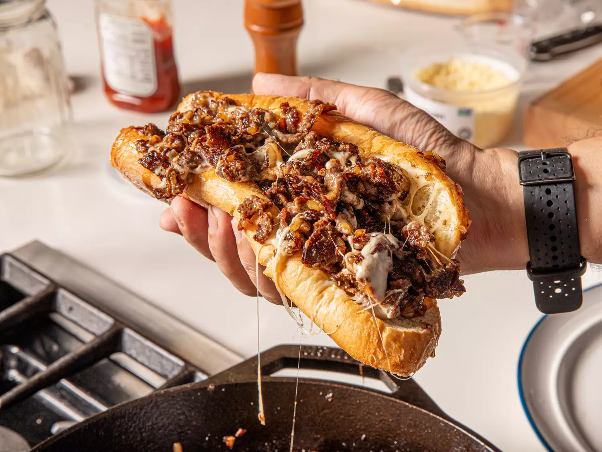

Home
Apple Fritter

Description
Apple Fritters are luscious deep-fried donuts filled with apples and cinnamon and drizzled with an easy three-ingredient glaze. You can have these scrumptious warm apple fritters in your hands in less than thirty minutes. Make sure you stash a couple for yourself, or you might blink your eyes, and they will be gone!
Ingredients
Apple Fritter
- 1 1/2 cups all purpose flour
- 1/4 cup sugar
- 2 teaspoons baking powder
- 1/2 teaspoon salt
- 1 1/2 teaspoons cinnamon
- 1/3 cup milk
- 2 eggs
- 3 tablespoons applesauce
- 2 large Granny Smith apples or Honey Crisp apples peeled, cored, and diced
- Canola Oil or Vegetable Oil for frying
Glaze
- 2 cups powdered sugar
- 1/4 cup milk
- 1/2 teaspoon vanilla extract
Steps
- Whisk together flour, sugar, baking powder, salt, and cinnamon in medium bowl. Make a well in the center and add 1/3 cup milk, eggs and applesauce. Stir just to combine. Fold in apples.
- Heat 1 1/2 inches of oil in heavy skillet, dutch oven or deep fryer to 375 degrees. Drop about 1/4 cup of batter per fritter into hot oil; spreading it out as you drop. Cook each side until golden brown; approximately 2 minutes per side. Use a slotted spoon to remove to paper towels to drain.
- Whisk together 1/4 cup milk, powdered sugar and vanilla. Dunk each fritters in the glaze turning over to make sure both sides coated. Place on wire racks to air dry and drip.
Rock Cinnamon French Toast

Description
This french toast is THE BEST EVER. I can say they’re honestly the best I’ve ever had, and I love french toast. The best part of this recipe is 100% the peanut butter sauce. It’s really the decisive component. If you love peanut butter, Rock toast is definitely for you. If you prefer, you can also use another nut butter. Another component that I really appreciated was the toasted coconut. I’ve seen a few versions include Tequila-infused flakes but the original one didn’t include this. If you want to walk the extra mile, soak the flakes for a couple of hours in Tequila before toasting them in the oven.
Ingredients
French Toast
- 2 eggs
- 250 ml milk
- ¼ tsp salt
- 75 g brown sugar
- ½ tsp cinnamon
- ¼ tsp vanilla extract
- 2 2in/6cm thick slices of brioche bread you can also make 4 thinner slices
Peanut Butter Sauce
- 6 tbsp peanut butter
- 150 g maple syrup or other syrup / honey you like
- 6 tbsp coconut cream
Whipped Cream
- 200 ml whipping cream cold, straight from the fridge
- 2 tbsp icing sugar
- ½ vanilla pod, only the seeds or 1 tbsp vanilla paste, or 1 tsp vanilla extract or essence
For Cooking
To Serve
- Toasted coconut flakes I like to toast them in a preheated oven at 180°C/350°F for 10-15min
Steps
French Toast
- In a bowl, combine all the ingredients except the bread with a whisk. You can also use a blender.
- Soak the slices of bread for 2 hours on each side. You can also soak them overnight in the fridge and in the morning you turn them for 30min-1hr to get the other side as well. Here I recommend that at home it's easier to use thinner slices of bread so the soaking is just for a minute.
Cooking French Toast
- Preheat a pan over medium heat, add a bit of butter and add the bread. Cook for 2-3min or until golden.
- If you made thick slices, they bake in a preheated oven at 180°C/350°F for 10 minutes or 15 minutes if soaking overnight. If you used thinner slices, there's no need to bake in the oven.
- Serve hot.
Peanut Butter Sauce
- Warm up the peanut butter in the microwave.
- Add a bit of the maple syrup at a time, whisking to mix.
- Add the coconut cream and also whisk it in.
Whipped Cream
- Beat the cream with the sugar and vanilla until fluffy.
To Serve
- Serve the hot french toast with plenty of sauce, whipped cream and toasted coconut flakes.
Philly Cheesesteak

Description
Tender, well-marbled steak, sautéed onions, and melty provolone cheese served in a soft but sturdy hoagie roll define this classic Philly sandwich.
Ingredients
Philly Cheesesteak
- 1 pound (454 g) boneless rib eye steak or skirt steak or store-bought pre-sliced rib eye
- 1 tablespoon (15 ml) vegetable oil or other neutral oil
- 1/2 medium yellow onion (4 ounces; 114 g), cut into 1/4-inch dice
- 75 g brown sugar
- 8 thin slices provolone cheese (about 6 ounces; 160 g), 4 slices torn into 1-inch pieces and 4 slices left whole
- 2 tablespoons grated Parmigiano-Reggiano cheese (optional)
- 1 teaspoon Diamond Crystal kosher salt; for table salt use half as much by volume
- 1/8 teaspoon freshly ground black pepper
- Two 7- to 8-inch-long Italian hoagie/sub rolls, split lengthwise, but left attached on 1 side to create a hinge
Steps
Philly Cheesesteak
- If using a whole steak, trim and cut steak crosswise with grain into roughly 3-inch wide sections, then set on large plate and freeze until firm but not frozen solid, about 1 hour. If using pre-sliced steak, skip to chopping instructions in Step
- Using a sharp knife, shave steak as thin as possible on a biased angle against the grain. Mound shaved meat on cutting board and chop coarse with knife, about 5 times for store-bought sliced meat or 10 times for hand-sliced.
- Heat an empty 12-inch cast-iron skillet over medium-high heat for 5 minutes. Add oil to skillet and heat until just smoking. Add meat and onion in an even layer and cook, without stirring, until well browned on one side, 4 to 6 minutes. Continue to cook, stirring frequently to move and pull apart the meat slices until meat and onions are browned and meat is no longer pink, 2 to 4 minutes.
- Stir in torn provolone cheese, Parmesan cheese (if using), salt, and pepper. Cook, stirring constantly, until cheese is melted and well combined, 1 to 2 minutes. Turn off heat. Divide mixture into 2 individual portions the length of the rolls. Shingle 2 slices of Provolone cheese over each portion. Cover and let cheese melt, about 1 minute.
- Center rolls, cut sides down, over each portion of meat. Working with one at a time, use a large spatula to scoop under each portion of meat and flip meat into roll to create a filled sandwich. Serve immediately.